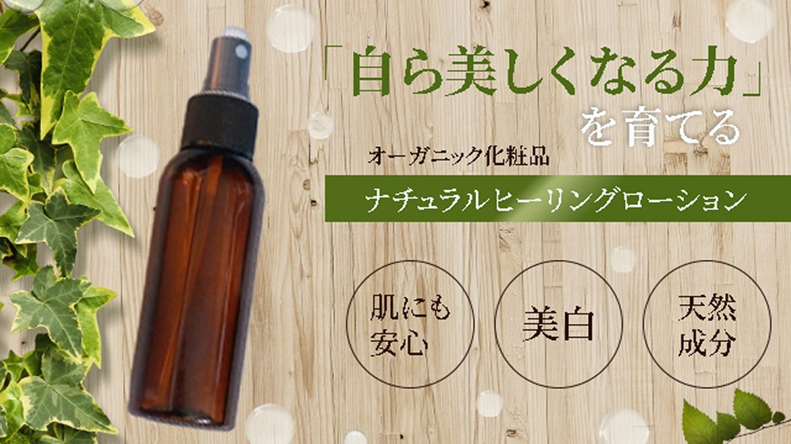

← Back to main page

オーガニック美容品
ターゲット
敏感肌・自然派志向の20〜40代女性。成分表示を確認し、「効果」以上に「安心して肌にのせられるか」を判断軸にする慎重な層だ。
デザイン上の工夫
木目とアイビーの実写で「ナチュラル」の世界観を写真の段階で伝える。商品を左、コピーを右に置き、視線を左→右へ自然に誘導した。「自ら美しくなる力」を鉤括弧で括り、商品名ではなくコンセプトを主役に立てている。円形バッジ3つ（肌にも安心／美白／天然成分）で訴求点を一目で整理し、読ませずに伝える設計とした。